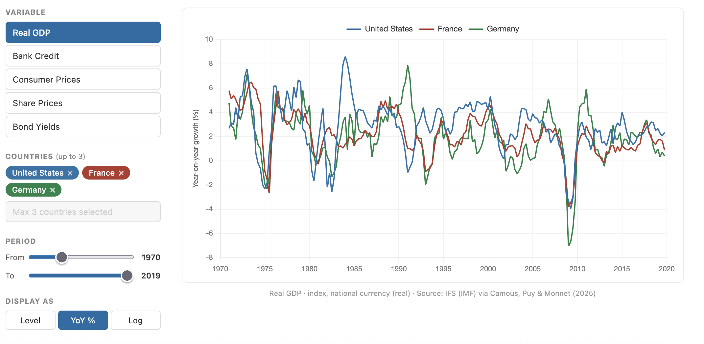

Database
World Macro-Financial Dataset

Academic Publications
Fiscal Progressivity and the Time Consistency of Monetary Policy
The Central Bank Strikes Back! Credibility of Monetary Policy under Fiscal Influence,
with Dmitry Matveev
Political Activism and the Provision of Dynamic Incentives,
with Russell Cooper
Furor over the Fed: A President's Tweets and Central Bank Independence,
with Dmitry Matveev
The Evolution of European Economic Institutions during the COVID-19 Crisis,
with Gregory Claeys
Working Papers
Monetary Stabilization of a Multi-Sector Economy: Adding Words to Action?,
with Dmitry Matveev
Austria One Century Apart: Persistent Effects of Hyperinflation on Inflation Expectations,
with Natalia Garcia Soto
Evaluating the Financial Instability Hypothesis,
with Alejandro Van der Ghote